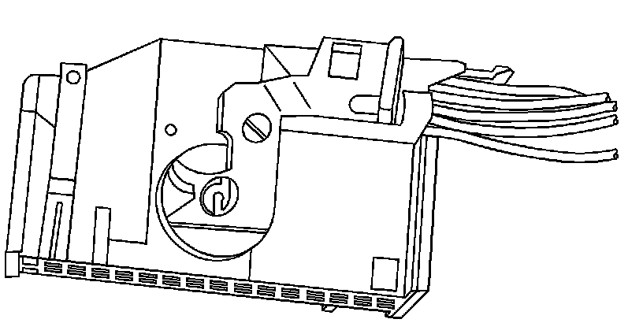
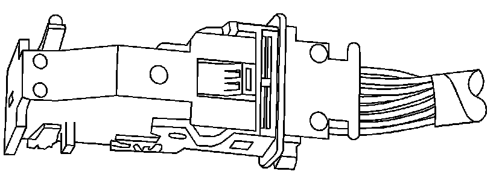
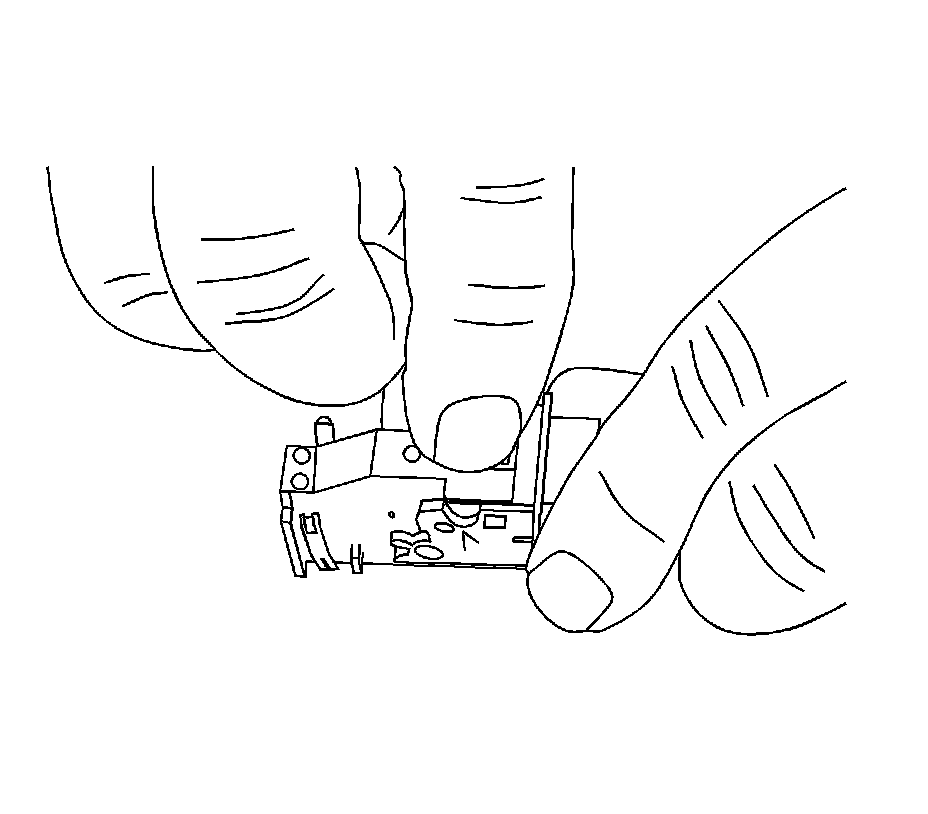
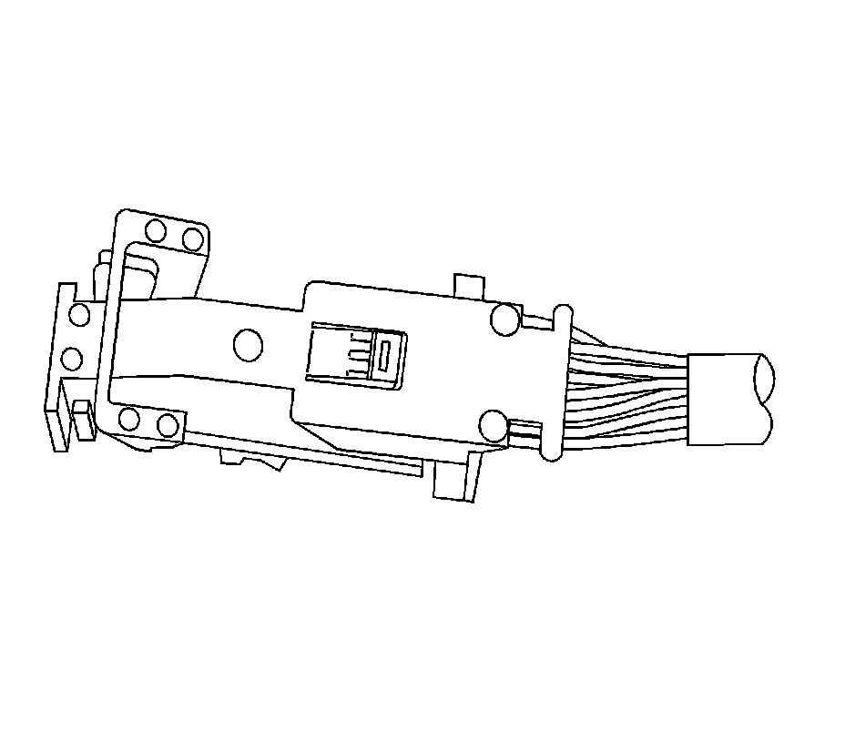
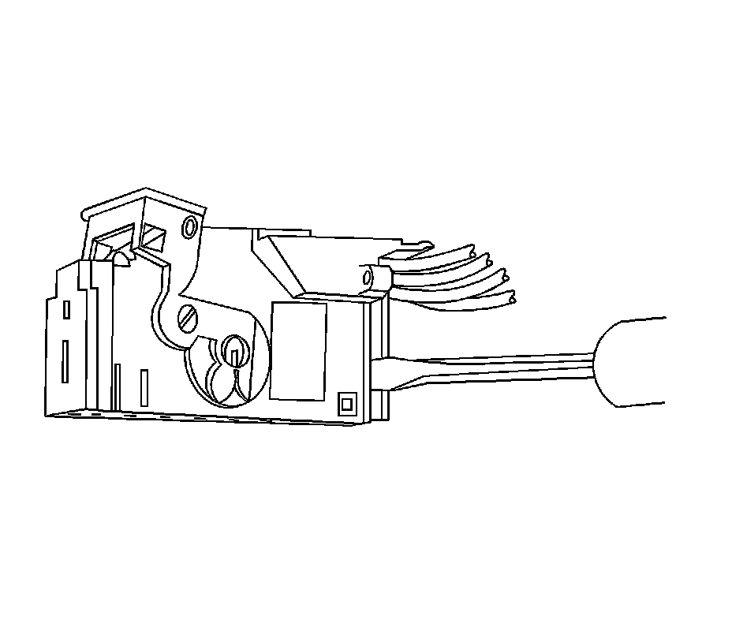
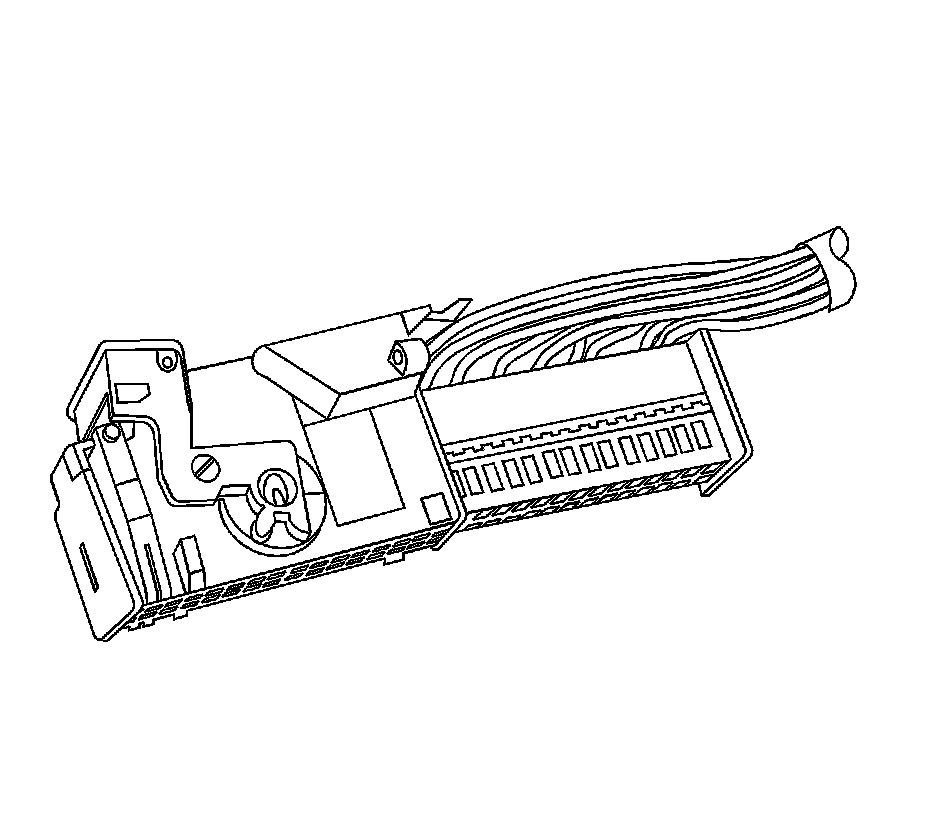
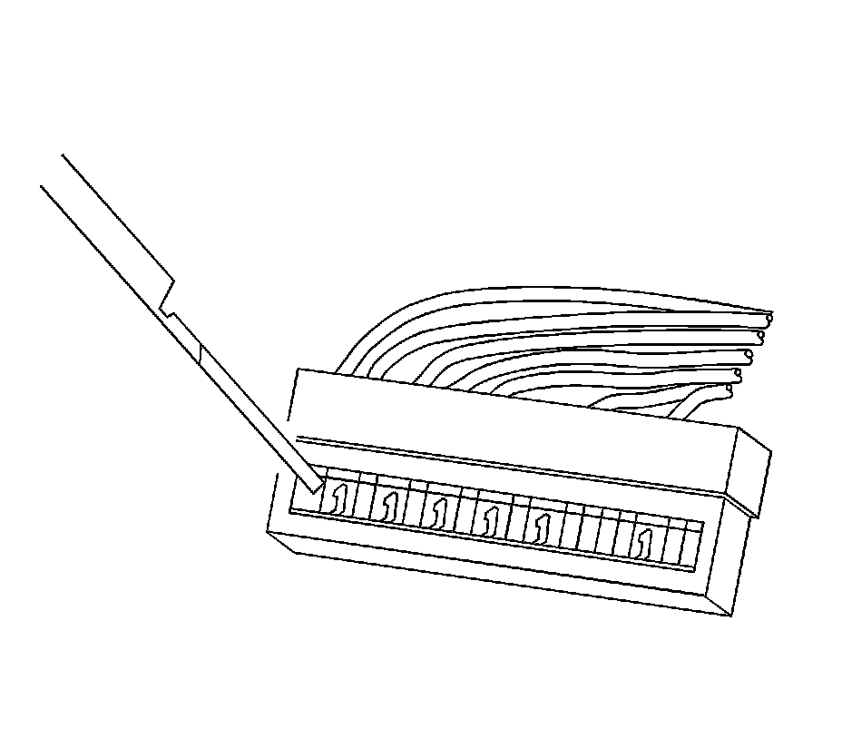

Tyco/AMP Connectors (Door Module)
TYCO/AMP CONNECTORS (DOOR MODULE)
TOOLS REQUIRED
J-38125 Terminal Repair Kit
REMOVAL PROCEDURE

Side view of connector.

View of top of connector.
1. Locate the assist lever and lock on the top of the connector.

2. While depressing the lock, pull the lever over and past the lock.

3. Disconnect the connector from the component.

4. Locate the dress cover locking tabs at the rear of the connector. Use a small flat-blade tool to release the locking tabs. Repeat this procedure for the other locking tab.

5. Once the locking tabs are unlocked, slide the inner connector out of the rear of the connector housing.

6. Use the J 38125-12A (GM P/N 12094429) tool to release the terminals by pressing on the tang. See the release tool cross reference in the Reference Guide of the J-38125 to ensure that the correct release tool is used.
7. While holding the removal tool in place, gently pull the wire out of the back of the connector. Always remember never use force when pulling a terminal out of a connector.
REPAIR PROCEDURE
Use the appropriate terminal and follow the instructions in the J-38125.
Location of the terminal in the repair tray and the proper crimp tool can be found in the appropriate connector end view.